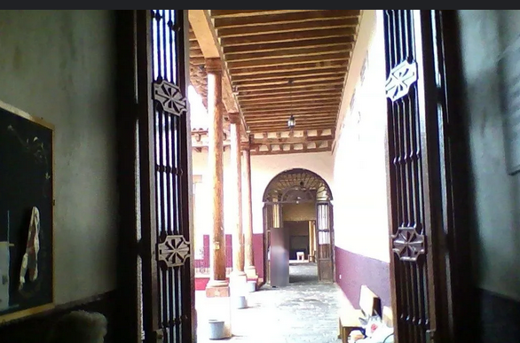
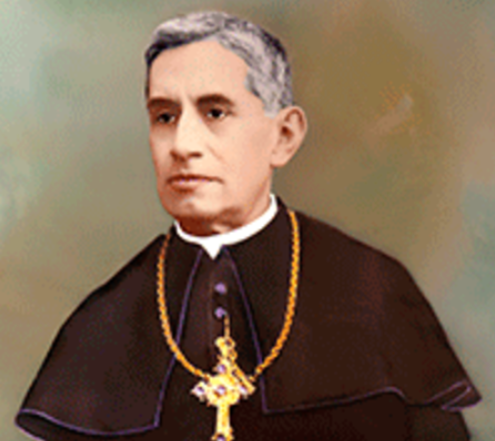
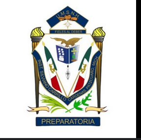

Soy Santiago Gonzalez Lara, nacido en Patzcuaro, Michoacán un 25 de Mayo del 2004; Estudiante de Ingenieria en sistemas en el Tecnologico Nacional de México campus Instituto Tecnologico de Morelia.
Gusto de jugar videojuegos recurrentemente del tipo MOBA o Strategic Shooter, de escuchar musica y recientemente comencé el hobbie de la lectura con libros como:
- 1984Gorge Orgwell
- Carta de una desconocidaStefan Zweig
- la metamorfosisFranz kafka
- Carta al PadreFranz Kafka
- Esperando a GodotSamuel Beckett
- Morir de PiePedro J. Fernandez


Información academica
Mi formación académica ha sido un viaje lleno de aprendizaje y crecimiento. Comencé mi educación primaria en la Escuela Juana Pavón de Morelos, donde adquirí las bases fundamentales de mi formación. Posteriormente, concluí este nivel en el Colegio Silviano Carrillo Cárdenas, donde reforcé valores como la disciplina y el trabajo en equipo.

Durante mi educación secundaria, estudié en la Secundaria Técnica No.8 "La Paz", donde descubrí mi interés por la tecnología y las ciencias exactas. Más tarde, continué mi preparación académica en el Colegio Silviano Carrillo Cárdenas, donde cursé la preparatoria y consolidé mi pasión por la resolución de problemas y el pensamiento lógico.

Actualmente, soy estudiante de 6to semestre de Ingeniería en Sistemas en el Instituto Tecnológico de Morelia. Estoy próximo a elegir mi especialidad en Ingeniería de Software, un campo que me apasiona por su capacidad para transformar ideas en soluciones tecnológicas innovadoras. Mi formación académica me ha brindado las herramientas necesarias para enfrentar desafíos y contribuir al desarrollo de proyectos tecnológicos de impacto.

Aunque aún no cuento con experiencia formal en el campo de la Ingeniería en Sistemas, he desarrollado habilidades valiosas a través de mis experiencias laborales previas, las cuales me han permitido fortalecer mi capacidad de trabajo en equipo, adaptabilidad y resolución de problemas.
Durante 3 años, trabajé como cajero en una tienda de importaciones, donde adquirí habilidades clave como la atención al cliente, gestión de inventarios y manejo de transacciones financieras. Esta experiencia me enseñó la importancia de la organización, la eficiencia y el trato cordial con los clientes.
Además, tuve la oportunidad de trabajar como estibador/flejador en un empaque de aguacates durante un par de meses. En este rol, desarrollé resistencia física, disciplina y la capacidad de trabajar bajo presión en un entorno dinámico. También reforcé mi compromiso con el trabajo en equipo y la importancia de cumplir con los plazos establecidos.
Estas experiencias, aunque no están directamente relacionadas con mi carrera, me han proporcionado una base sólida de habilidades transferibles, como la responsabilidad, la ética laboral y la capacidad de adaptarme a diferentes entornos de trabajo. Actualmente, estoy enfocado en aplicar estos aprendizajes en mi formación como Ingeniero en Sistemas, con el objetivo de contribuir al desarrollo de soluciones tecnológicas innovadoras y eficientes.